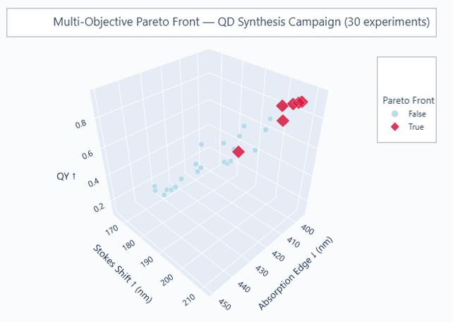

30-experiment DOE campaign using Bayesian optimization to search a 5-parameter space for Mn-doped lead-halide perovskite quantum dot synthesis. Goal: maximize quantum yield and Stokes shift while minimizing absorption edge. Best trade-off cluster found in 4 iterative rounds: APTES ligand + MA cation + low Mn (1–10 mol%), Stokes shift 203–209 nm, quantum yield 83–92%, absorption edge 395–403 nm. 6 of 30 experiments on the Pareto front.
The target material is Mn-doped lead-halide perovskite quantum dots embedded in a PMMA polymer matrix, a scintillator designed for dual-readout calorimetry. Dual-readout calorimetry is a particle physics detector technique that measures both Cherenkov radiation (ultra-fast UV photons) and scintillation (slower visible-light emission) from the same event, then separates them by timing to reconstruct the original particle energy more accurately.
The synthesis route is mechano-chemical ball milling. Milling cuts per-batch time from ~1 day to 30–45 minutes and enables rapid screening, but opens a 5-coupled-parameter space (2 categorical, 3 continuous) where a full factorial design would require hundreds of experiments. The goal: maximize Stokes shift (a 200+ nm gap between UV absorption and orange emission prevents the composite from reabsorbing its own scintillation output), maximize quantum yield, and minimize absorption edge wavelength, using as few synthesis runs as possible.
| Parameter | Type | Range / Options | Physical meaning |
|---|---|---|---|
| Capping Ligand | Categorical | Oleylamine, Octylamine, APTES | Organic molecules coating nanocrystal surfaces; controls size, solubility, and surface defect density |
| A-Site Cation | Categorical | Cs, PEA, MA | Positively charged ion in the ABX₃ perovskite lattice (Cs = cesium, PEA = phenethylammonium, MA = methylammonium); governs crystal symmetry, stability, and emission lifetime |
| Mn²⁺ Doping | Continuous | 1–50 mol% | Manganese dopant concentration; creates an energy transfer pathway that red-shifts emission and enlarges the Stokes shift |
| X Composition | Continuous | 0–1 (halide ratio) | Chloride-to-bromide ratio (0 = all Br, 1 = all Cl); higher Cl widens the bandgap and blue-shifts the spectrum |
| Milling Time | Continuous | 3–20 min | Duration of mechanical grinding; longer milling produces smaller particles with altered optical properties and reaction yield |
Step 1: Latin Hypercube Sampling (LHS). LHS divides each parameter's range into equal intervals and places exactly one sample per interval, giving uniform coverage across the full parameter space without testing every combination. 15 initial conditions were generated before the surrogate model had any data.
Step 2: Bayesian optimization loop. After each batch of measurements, a Gaussian process surrogate updates its prediction surface. The q-NEHVI acquisition function (Noisy Expected Hypervolume Improvement) selects the next batch of 5 conditions to run, scoring candidates by how much they are expected to expand the Pareto front.
Step 3: Pareto front identification. The Pareto front is the set of experiments where no other tested condition is better on all three objectives simultaneously. Non-dominated solutions were extracted across all 30 experiments and visualized in 3D (Stokes shift × quantum yield × absorption edge).

The MA A-site cation + APTES ligand + low Mn doping (1–10 mol%) holds 3 of 6 Pareto-optimal experiments, a region the initial LHS sampled only sparsely. Bayesian optimization identified it within rounds 2–3. Random or grid search would have required substantially more experiments to find it.
BayBE (Merck KGaA's open-source Bayesian optimization framework for lab automation) wraps
BoTorch and GPyTorch via BotorchRecommender. The mixed search space requires
SearchSpace.from_product, which handles categorical parameters (ligand, cation)
via one-hot encoding alongside continuous ranges. q-NEHVI was chosen over EHI because batch
size > 1 and measurements have realistic noise.
Measurement data is illustrative.
In a real campaign, synthesis runs happen between each recommend() call.
The notebook uses pre-generated results with matching statistical structure to demonstrate
the loop end-to-end. Real experimental turnaround adds 1–5 days between rounds
depending on characterization throughput.
GP cold-start. 15 points across 5 parameters is thin. Rounds 1–2 recommendations are noisier than Rounds 3–4 as the model accumulates data. A 20–25 point LHS would reduce early-round noise at modest experimental cost.
No synthesis feasibility constraints. Ligand/cation incompatibilities and solubility limits are not encoded in the search space. Recommended conditions should be checked for physical feasibility before synthesis.
Acquisition function cost. q-NEHVI becomes computationally expensive for large Pareto fronts or more than 3 objectives. For scaled campaigns, q-NParEGO is a faster alternative using random scalarization.